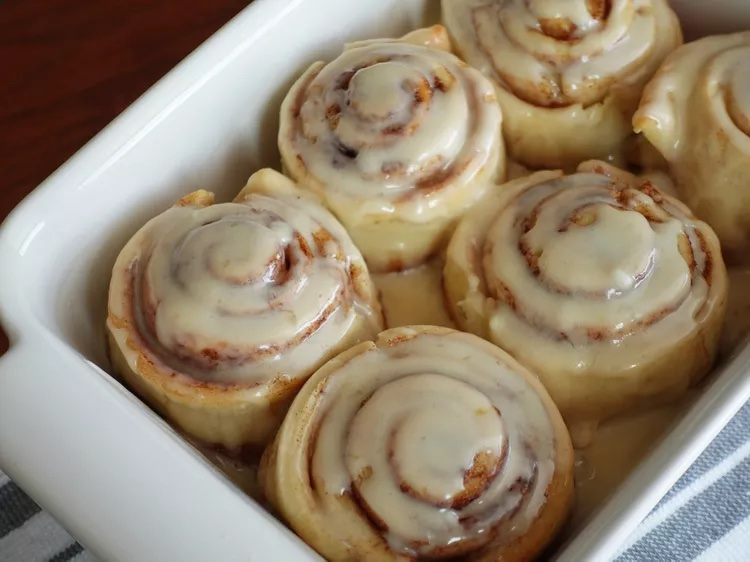

Cinnamon rolls

Description
With this two-ingredient dough, you can make gooey, homemade cinnamon rolls in record time. The simple cream cheese glaze seeps into every swirl and delivers a delicious sweet and tangy flavor. Soft, fluffy, and buttery — these homemade delights are the perfect treat to start your morning.
Ingredients - Dough
- 1 cup self-rising flour, plus more for kneading
- 1 cup plain Greek yogurt
Ingredients - Filling
- 3 tablespoons brown sugar
- 2 tablespoons butter, melted
- 1 teaspoon ground cinnamon
Ingredients - Glaze
- ¾ cup powdered sugar
- 1 ounce cream cheese, softened
- 1 tablespoon salted butter, softened
- 1 tablespoon milk
- ½ teaspoon vanilla extract
Directions
- Preheat the oven to 325 degrees F (165 degrees C). Grease a baking dish or loaf pan.
- Mix flour and Greek yogurt together in a medium bowl until a shaggy dough forms. Transfer to a surface dusted with more self-rising flour, and knead for 8 to 10 minutes. Continue adding flour as needed if the dough is too sticky.
- Roll out the dough with a rolling pin to form a large 10x12-inch rectangle.
- Combine brown sugar, melted butter, and cinnamon in a small bowl. Spread this mixture over the top of the dough. Starting at one of the shorter ends, roll the dough up tightly until it forms a log. Slice into 6 even pieces. Transfer cinnamon rolls to the prepared pan.
- Bake in the preheated oven until golden brown, 20 to 25 minutes.
- In the meantime, whisk together powdered sugar, cream cheese, softened butter, milk, and vanilla until smooth. When the cinnamon rolls have finished cooking, remove from the oven and drizzle the cream cheese glaze on top.